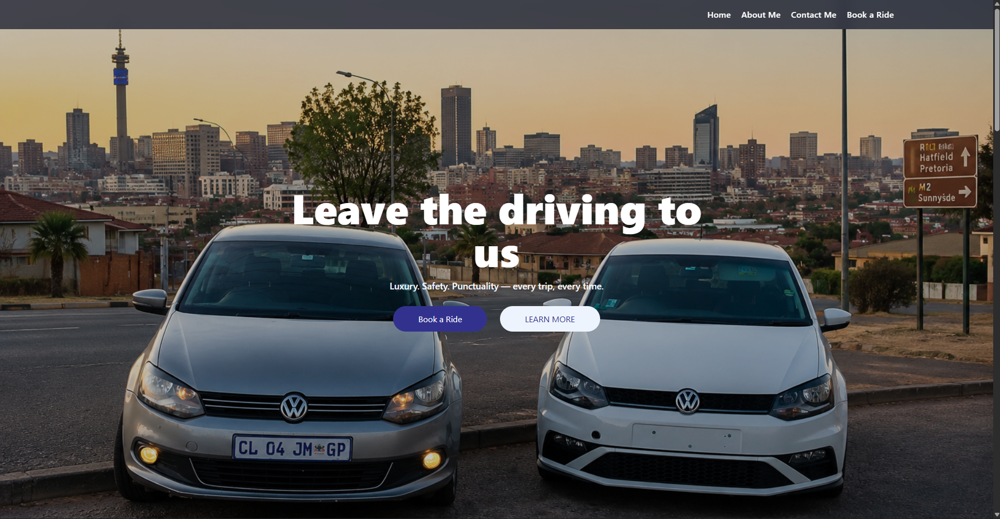
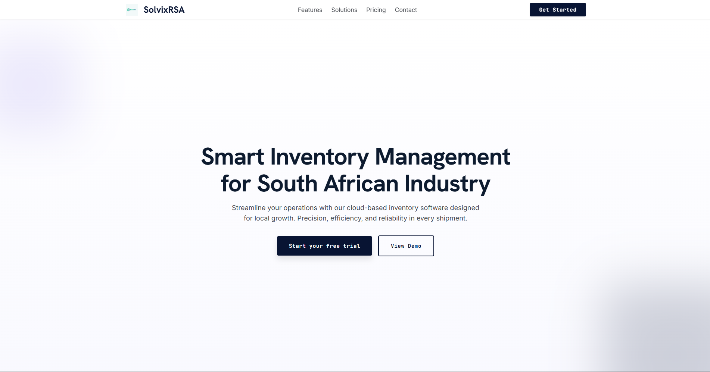
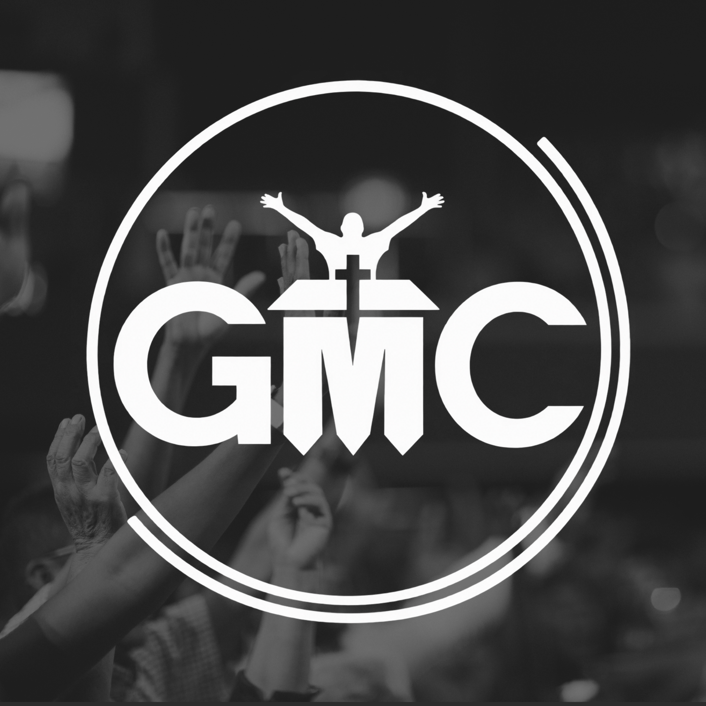

Showcase of business websites and custom applications we’ve built, launched, and supported for growing companies.
These live projects showcase the practical applications we’ve delivered for fast-moving businesses — from customer-facing websites to internal operational systems that keep work flowing smoothly.

Live booking system for shuttle logistics that automates routes, payments, and passenger management.
A live digital booking and operations platform for shuttle logistics, bringing key passenger and fleet workflows together.
Route bookings, payment handling, passenger management, and fleet scheduling are managed through one system.
Scheduling time was reduced by 70%, with fleet utilisation improved through a single modern dashboard.
Custom website built to present services, capture leads, and reflect a premium brand identity.
A custom business website presenting Mamabolo Legacy Group’s services with a polished, premium brand identity.
Service information, lead capture, clear conversion paths, and automated contact workflows.
The site gives visitors clearer ways to understand the business and get in touch, helping improve visitor engagement.

Building a smarter inventory management platform to automate stock control, order forecasting, and supplier coordination in real time.
An inventory management platform in active development, focused on making stock operations more connected and efficient.
Real-time stock control, order forecasting, and supplier coordination are the platform’s core focus areas.
Core workflows are in place, and the first pilot group has been onboarded for early testing. Reporting work is targeting a reduction from five days to 45 minutes.

Mobile and web application designed to bring member access, Bible reading, ministry content, and secure giving into one digital space.
A mobile and web church app being developed in partnership with NelX Technologies to bring Grace Mission Church International’s digital experience together.
Member sign-up and login, YouTube ministry content, Bible reading, and secure giving.
Tools to manage ministries across the church, with a companion church website available to visitors and members.
Corporate website developed to present a modern, trustworthy brand across renewable energy and petroleum services.
A corporate website for a company operating across renewable energy and petroleum supply, including solar and fuel services.
Clear service information and business messaging, with an emphasis on trust, compliance, and service clarity.
The site presents Lux Energy Solutions as a modern energy partner with a professional online presence.
Development website for a ministry in Ratanda, designed to share sermons, prayer updates, events, and community information.
A dedicated church website for For His Grace Ministries, currently being refined to support outreach and ministry communication.
Sermons, prayer updates, ministry events, and community information are being shaped into a warm, welcoming digital experience.
The website is still in development and will continue to evolve as the ministry's content and engagement needs grow.